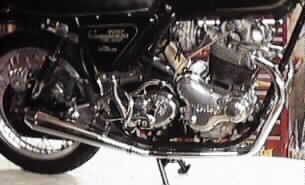

for Commando's by Viking
 This picture shows all the parts that come with this exhaust system.
This picture shows all the parts that come with this exhaust system.
- Right and left pipes
- Pipe clamp for the left pipe
- Muffler and pipe clamp
- Two mounting brackets
- Stainless bolts, nuts and washers to secure the muffler to the mounting brackets.
 These two pictures show the high quality of the craftsmanship that goes into
all the Viking products.
As you can see these pipes incorporate the 850 type of cylinder head mounting system
(see the notes below for the required parts if you do not have a pre-MK3 850).
These two pictures show the high quality of the craftsmanship that goes into
all the Viking products.
As you can see these pipes incorporate the 850 type of cylinder head mounting system
(see the notes below for the required parts if you do not have a pre-MK3 850).

 The following four pictures show a MK3 with this exhaust system mounted.
The following four pictures show a MK3 with this exhaust system mounted.
Why change to a 2 onto 1 exhaust system?
Besides the unique look that some Commando owners desire, this exhaust system was designed to improve 60-90MPH (100-150 KPH) riding range. Since this is where the majority of riders will spend their time when on the road, this system is a big performance enhancement. This exhaust system will increase the mid-range roll on torque to have you accelerating quickly and cleanly past slower moving traffic without the need to down shift. When you are cruising along the road and you come up behind some traffic, a quick flick of the wrist will have you moving past easily .
When you are blasting through your favourite stretch of windy road, these pipes will enhance the midrange punch so that you will drive out of corners with extra thrust, enhancing the thrill of the ride. They have been built with as much cornering clearance as possible whilst still retaining the center stand.



 This picture shows how the two mounting brackets are assembeled. We will refere to the longer
L shaped bracket as Bracket L and the shorter U shaped bracket as Bracket U.
Bracket U is mounted to bracket L with two stock mounting rubbers (06-0622) bolted between
them as shown in this picture.
Bracket L mounts next to the inside of the stock right hand support plate (Z bracket 06-1228)
and is secured by the two bolts that secure the small passenger footpeg bracket (06-1722) to
the Z bracket.
In this picture the stock Z bracket would be between Bracker L and the small bracket (06-1722).
The muffler is then secured to the bottom two holes on Bracket U.
The last picture of this exhaust system mounted on a MK3 shows this bracket mounted on the bike.
This picture shows how the two mounting brackets are assembeled. We will refere to the longer
L shaped bracket as Bracket L and the shorter U shaped bracket as Bracket U.
Bracket U is mounted to bracket L with two stock mounting rubbers (06-0622) bolted between
them as shown in this picture.
Bracket L mounts next to the inside of the stock right hand support plate (Z bracket 06-1228)
and is secured by the two bolts that secure the small passenger footpeg bracket (06-1722) to
the Z bracket.
In this picture the stock Z bracket would be between Bracker L and the small bracket (06-1722).
The muffler is then secured to the bottom two holes on Bracket U.
The last picture of this exhaust system mounted on a MK3 shows this bracket mounted on the bike.
Pre-MK3 850cc Mounting Notes:
You will not need any additional parts to mount this exhaust system on a pre-MK3 850 Commando. You may want to replace your squash washers (06-3995) and your mounting rubbers (06-0622) if yours are old and worn. You may also want to purchase a new small passenger footpeg bracket (06-1722) for the left side instead of using your existing larger bracket (06-1720). This will clean up the left side of your bike considerably. We also stock all the replacement mounting nuts, bolts and washers in stainless if you choose not to reuse your stock fasteners.
MK3 850cc Mounting Notes:
You will need to replace your exhaust pipe cylinder head mounting parts with the Pre-MK3 850 parts. The parts you will need are:
- Two Squash Washers (06-3995)
- Four Pipe Collets (06-3990)
- One small passenger footpeg bracket (06-1722) since your existing bracket will not allign with the holes in Bracket L.
You may want to replace your mounting rubbers (06-0622) if yours are old and worn.
You can use the small passenger footpeg bracket (06-4149) that you removed from the right side
for the left side instead of using your existing larger bracket (06-4148).
This will clean up the left side of your bike considerably.
We also stock all the replacement mounting nuts, bolts and washers in stainless if you choose not
to reuse your stock fasteners.
NOTE: the mounting bracket will interfere with your rear brake line. You can, with some
fiddeling, move the brake switch, and brake T up on the Z bracket. It is a tight fit, but can
be accomplished. If you are interested, we can make up a braided line to replace your brake pipe
that will allow for an easier installation.
750cc Mounting Notes:
You will need to replace your exhaust pipe cylinder head mounting parts with the Pre-MK3 850 parts. The parts you will need are:
- Two Squash Washers (06-3995)
- Two Exhaust Finned Nuts (06-3988). Your old nuts will work, but they do have deeper threads.
You may want to replace your squash washers (06-3995) and your mounting rubbers (06-0622)
if yours are old and worn.
You may also want to purchase a new small passenger footpeg bracket
(06-1722) for the left side instead of using your existing larger bracket (06-1720). This
will clean up the left side of your bike considerably.
We also stock all the replacement mounting nuts, bolts and washers in stainless if you choose not
to reuse your stock fasteners.
This page was written and designed by F. H. Eaton & Associates if you have any questions or comments please contact us at info@fheaton.com